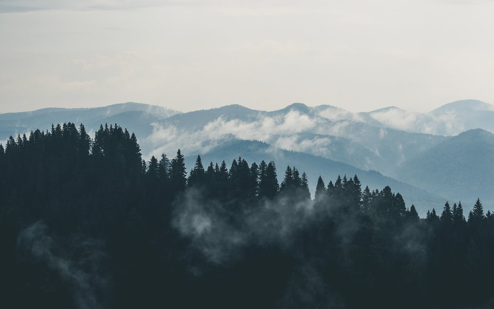
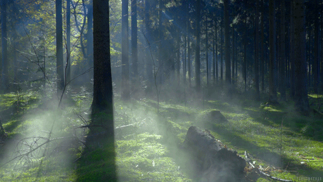

Bosques(imagenes simple png, jpge)
son ecosistemas terrestres que se caracterizan por tener una gran diversidad de especies vegetales y animales, y que están formados principalmente por árboles y arbustos. Son fundamentales para el desarrollo del planeta, ya que cumplen con diversas funciones, como: Regular la temperatura y los ciclos del agua Proteger los suelos Suministrar madera, energía, frutos, y aire limpio Ofrecer espacios recreativos y bienestar Controlar la erosión Coadyuvar en la captura de carbono y la asimilación de contaminantes
Tipos de bosques(imagenes gif)
Los bosques cubren un tercio de la superficie terrestre del mundo, el equivalente a más de 15.3 millones de millas cuadradas. En esta inmensa área se pueden encontrar hábitats de todo tipo, desde los bosques boreales de Canadá hasta las selvas tropicales de Brasil. Cada bosque es diferente, sin embargo algunos comparten rasgos comunes basados en el clima local. De hecho, todos los bosques del planeta pueden encajar en una de cuatro categorías. Cuatro tipos de bosques: Tropical, Subtropical, Templado y Boreal.
Bosques Boreales (imagenes background)
Los bosques boreales están llenos de vida que está adaptada para soportar temperaturas frías durante todo el año, como el reno de bosque o caribú, o animales que pueden migrar largas distancias cada invierno. Los bosques boreales comprenden bosques caducifolios y de coníferas, cubriendo vastas extensiones en Canadá, Alaska y Rusia. Los bosques boreales también son un importante sumidero de carbono. Como todos los bosques, absorben el dióxido de carbono, uno de los principales contribuyentes al calentamiento global y al cambio climático, eliminándolo de la atmósfera y ayudando a mantener saludable a todo el planeta.

Bosques Templados(imagenes flotantes)
 Los bosques templados son, como su nombre lo indica, los bosques característicos de las regiones de clima templado de los dos hemisferios del planeta. Su clima se caracteriza por una temperatura media anual de 18 °C y precipitaciones medias entre 600 mm y 2000 mm anuales
Los bosques templados son, como su nombre lo indica, los bosques característicos de las regiones de clima templado de los dos hemisferios del planeta. Su clima se caracteriza por una temperatura media anual de 18 °C y precipitaciones medias entre 600 mm y 2000 mm anuales
Estos bosques ocupan extensas áreas de abundante y uniforme precipitación. Sus temperaturas siguen el patrón estacional, ya que las estaciones están claramente diferenciadas unas de las otras.Es común hallarlos antes de la aparición de las taigas, con las que pueden llegar a confundirse. Se distinguen de otros bosques más frondosos en que poseen un dosel mucho menos espeso y denso, de modo que puede verse el cielo desde el sotobosque.
El relieve de estos bosques es muy diverso. Puede darse en llanuras, valles o montañas indistintamente, dependiendo de su región geográfica. En las regiones más planas es donde se halla la mayor concentración humana del planeta, probablemente para aprovechar la riqueza del suelo para labores agrícolas.
 Las principales ubicaciones de este tipo de bosque se hallan en las regiones norteñas de América del Norte (gran parte de Estados Unidos, Alaska, Canadá), Europa (Escandinavia, Inglaterra, Finlandia) y Asia (Rusia, especialmente Siberia, pero también China). En el hemisferio sur, en cambio, se hallan en las regiones sureñas de Australia, Nueva Zelanda, Chile y Argentina. Se trata de los bosques que preludian las distintas zonas polares de cada hemisferio, en las que la vida vegetal se hace ya mucho más difícil.
Las principales ubicaciones de este tipo de bosque se hallan en las regiones norteñas de América del Norte (gran parte de Estados Unidos, Alaska, Canadá), Europa (Escandinavia, Inglaterra, Finlandia) y Asia (Rusia, especialmente Siberia, pero también China). En el hemisferio sur, en cambio, se hallan en las regiones sureñas de Australia, Nueva Zelanda, Chile y Argentina. Se trata de los bosques que preludian las distintas zonas polares de cada hemisferio, en las que la vida vegetal se hace ya mucho más difícil.
Bosques de México(imagenes con enlaces)
Los Bosques de México, debido a su ubicación geográfica cuentan con diversos ecosistemas, entre los cuales destacan los templados, nublados, cálidos, secos y de manglares.
Los bosques templados se distribuyen en gran parte del territorio mexicano, desde la Sierra de Juárez en Baja California, las Sierras Madre, la Sierra Norte de Oaxaca, hasta Los Altos de Chiapas. En general puede decirse que requieren de un clima templado ya sea por lluvia o por altitud, o ambas. Por lo tanto, se encuentran ampliamente distribuidos en las zonas serranas del este, oeste y sur, pero no tanto en la Mesa del Centro ni en la península de Yucatán. Conforman el 16% del territorio mexicano (314,240 km²). Sus habitantes animales son liebres,venados,zorros,lobos, conejos, víboras, búhos,entre otros.
Bosque nubloso también suele conocerse con el nombre de "bosque húmedo de montaña", "bosque mesófilo de montaña", "bosque de niebla", "bosque de neblina", "nubiselva" y otros más. El bosque nuboso se distingue por tener árboles con abundancia en epífitas y helechos, además de que gran parte del follaje de las especies se pierde en alguna época del año. También, tiene lluvias, neblina y humedad atmosférica durante prácticamente todo el año.
Bosque de Manglares,este tipo de bioma forestal está caracterizado por una formación vegetal leñosa y densa que tiene una altura de 1 a 30 metros con poca presencia e especies herbáceas y enredaderas. Se encuentran presentes en 17 estados cercanos al litoral y cuentan con una altitud de 0 a 5 m s. n. m. y con grandes precipitaciones que van de los 300 a los 1,300 mm y cuentan con una temperatura aproximada de los 20 a los 26 °C
Día internacional de los bosques(imagenes con filtro)
La Asamblea General de las Naciones Unidas mediante su resolución A/67/437, decide proclamar el 21 de marzo de cada año Día Internacional de los Bosques, que se observa a partir de 2013 para celebrar la importancia de todos los tipos de bosques y de árboles en general, y crear conciencia al respecto
El objetivo de este día internacional es hacer conscientes a los individuos sobre la importancia de los bosques en la vida de las personas y del papel crucial que desempeñan en la erradicación de la pobreza, la sostenibilidad medioambiental y la seguridad alimentaria. La gestión sostenible de los ecosistemas boscosos es clave para abordar los desafíos a los que se enfrentan los países afectados por conflictos, en vías de desarrollo o desarrollados. Las generaciones presentes y futuras nos beneficiaremos de ello